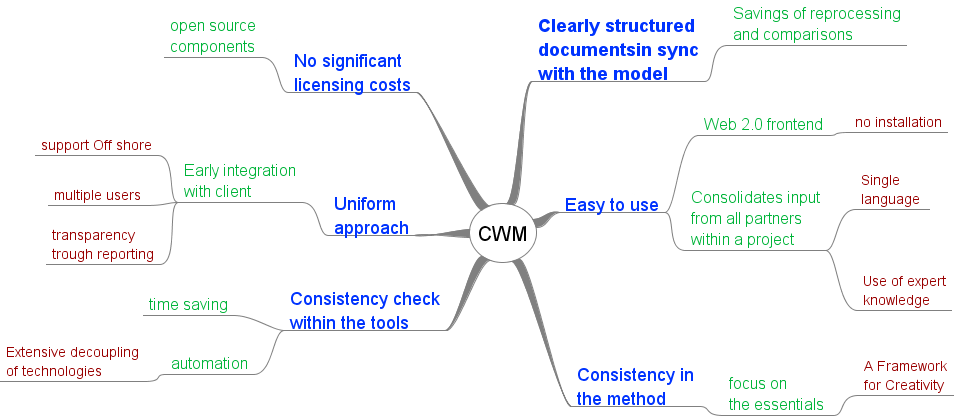

Welcome
to the Chronos Web Modeler 0.9.5 Beta Release.
The CWM is a tool for:
Collaborative modeling of Requirements, Use Cases and Domain.
Direct generation of Documents & Code.
Integration with other UML tools .

The CWM is:
Open
Extensible
Free
Use the provided model Chronos Default model to start
Check out the example Eurocom Model
Read the help
This is a Beta version, for your evaluation only. Not all features are presents and some are not stable. Please report bugs .